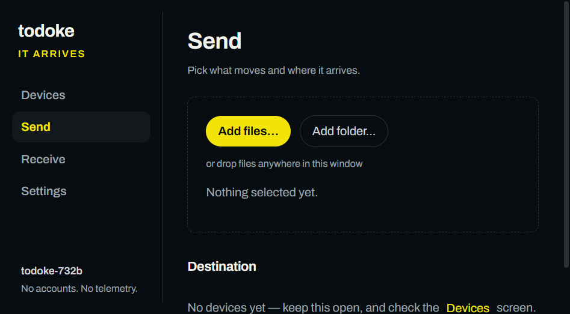
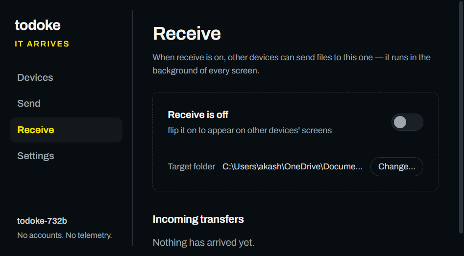
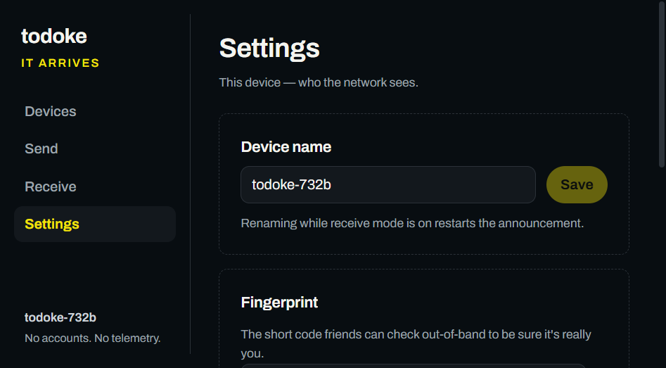

It finds your people.
Open Todoke on the same Wi-Fi and your devices simply appear — no accounts, no pairing ceremony, no QR scavenger hunt. Devices identify each other cryptographically, so the laptop you send to is your laptop.
40 GB of trip pics, the whole semester folder, tonight’s 12 GB render. Todoke sends it all straight to the device next to you at local-network speed — and proves every byte arrived.
Four things, done properly. Everything else other apps bolt on — accounts, clouds, subscriptions — never touches you.
Open Todoke on the same Wi-Fi and your devices simply appear — no accounts, no pairing ceremony, no QR scavenger hunt. Devices identify each other cryptographically, so the laptop you send to is your laptop.

Four parallel streams push your files at full wire speed, small files packed tight, progress to the byte. Your laptop falls asleep mid-transfer? Rerun the same command — it picks up exactly where the bytes stopped.

Receive mode runs quietly and logs every arrival. Each transfer ends with a receipt — per-file BLAKE3 hashes you can check — so “it sent fine” becomes “here’s proof it arrived intact.”

Your device carries a cryptographic fingerprint you can read out loud over a call. No accounts means nothing to breach, nothing to sell, nothing phoning home. The whole engine is open source — audit it yourself.
Every claim here comes from the built-in benchmark harness — same fixtures, same machine, rerunnable with one command. The numbers below are from a real laptop, release build, loopback.
Run it yourself: todoke bench — scenarios, fixtures and environment metadata ship in the repo. Loopback measures the engine; your NIC sets the LAN ceiling.
Receive mode is the app’s whole ritual: run it, and anything sent from a device on your network lands — verified.
$ todoke serve --target ./incoming
Todoke is receiving as “study-laptop” (7C2A…) on 192.168.1.24
Files land in ./incoming — Ctrl-C to stop
✓ received 3 file(s), 1.2 GB — verified intactCLI today, desktop app landing with v1 — both free, both open source. Until then, star the repo and the buttons above come alive the day the first release ships.
Every connection is encrypted and pinned to the receiver’s device key — an impostor can’t impersonate your laptop, on your network or any other. Every chunk is hash-verified before it touches your disk, and the final receipt lists the BLAKE3 hash of every file. The engine is open source; the receipt is your proof.
Nothing is lost. Received chunks live in staging and survive restarts on both sides — rerun the same send and it reconciles what’s already there, sending only the remainder. A transfer is never “failed”, just unfinished.
LocalSend made same-network sharing mainstream — respect. Todoke competes on the dimensions it doesn’t: parallel-stream throughput, resume across sleeps and network switches, per-file verification receipts, and a benchmark harness that publishes its own numbers instead of promising them.
Not yet. v1 is local-network — that’s where the speed lives. Cross-network relaying is designed into the transport and lands after v1, same protocol, same receipts.
No accounts, no servers, no telemetry — free costs us almost nothing to run, and that makes it sustainable. The whole engine is dual-licensed MIT OR Apache-2.0. If it earns it, a donation button exists. That’s the entire business model.
Windows, macOS and Linux run the same engine with the same tests. The CLI works today; the desktop app lands with v1. Mobile comes later — the protocol was built for it from day one.